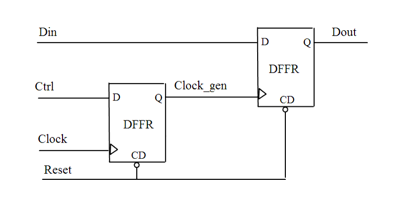

| Description | This rule detects internally generated clocks in the design. Any clock origin that is not a primary input is considered to be an internally generated clock. Internally generated clocks reduce the test coverage of your design. It is usually a good idea to add extra logic such as multiplexers or JTAG controllers to control all the clocks in your design. |
| Policy | DESIGN |
| Ruleset | CLOCKS |
| Language | VHDL/Verilog |
| Type | Hardware |
| Severity | Error |
This is an example of invalid Verilog code, followed by a circuit diagram that illustrates the problem:
module ntl_clk04_top (Clock, Reset, Ctrl, Din, Dout); input Clock, Reset, Ctrl, Din; output Dout; reg Clock_gen, Dout; //DFFR -- flip-flop with reset DFFR I0(.D(Ctrl), .CP(Clock), .CD(Reset), .Q(Clock_gen)); // NTL_CLK04 fires -- Clock_gen is an internally generated clock DFFR I1(.D(Din), .CP(Clock_gen), .CD(Reset), .Q(Dout)); //clock pp clock_gen ... endmodule